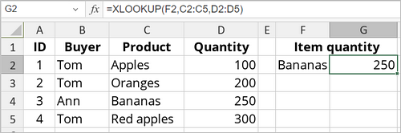

XLOOKUP funkcija
Funkcija XLOOKUP je jedna od funkcija za pretragu i reference. Koristi se za pronalaženje određenih stavki po redu, kako horizontalno tako i vertikalno. Rezultat se vraća u drugoj koloni i može da obradi dvodimenzionalne skupove podataka.
Sintaksa
XLOOKUP (lookup_value, lookup_array, return_array, [if_not_found], [match_mode], [search_mode])
XLOOKUP funkcija ima sledeće argumente:
| Argument | Opis |
|---|---|
| lookup_value | Vrednost koju tražite. |
| lookup_array | Niz ili opseg u kojem se traži. |
| return_array | Niz ili opseg u kojem će se vratiti rezultat. |
| if_not_found | Opcioni argument. Ako nema rezultata pretrage, vraća tekst naveden u [if_not_found]. Ako tekst nije naveden, vraća se “N/A”. |
| match_mode | Opcioni argument. Moguće vrednosti su navedene u tabeli ispod. |
| search_mode | Opcioni argument. Moguće vrednosti su navedene u tabeli ispod. |
Argument match_mode može biti jedan od sledećih:
| Vrednost | Opis |
|---|---|
| 0 | Podrazumevano. Vraća tačno podudaranje; ako nema podudaranja, vraća “N/A”. |
| -1 | Vraća tačno podudaranje; ako ga nema, vraća sledeću manju stavku. |
| 1 | Vraća tačno podudaranje; ako ga nema, vraća sledeću veću stavku. |
| 2 | Podudaranje sa džoker znakom. |
Argument search_mode može biti jedan od sledećih:
| Vrednost | Opis |
|---|---|
| 1 | Podrazumevano. Pretraga počinje od prve stavke. |
| -1 | Pretraga počinje od poslednje stavke (obrnuto). |
| 2 | Počinje binarnu pretragu sa lookup_array sortiranom uzlazno. Ako nije sortirano, rezultati su nevažeći. |
| -2 | Počinje binarnu pretragu sa lookup_array sortiranom silazno. Ako nije sortirano, rezultati su nevažeći. |
Napomene
Džoker znakovi uključuju upitnik (?) koji odgovara jednom karakteru i zvezdicu (*) koja odgovara više karaktera. Ako želite da pronađete upitnik ili zvezdicu, unesite tildu (~) pre karaktera.
Napomena: ovo je formula niza. Za više informacija, pročitajte članak Umetanje formula niza.
Kako primeniti XLOOKUP funkciju.
Primeri
Na slici ispod prikazan je rezultat koji vraća XLOOKUP funkcija.
